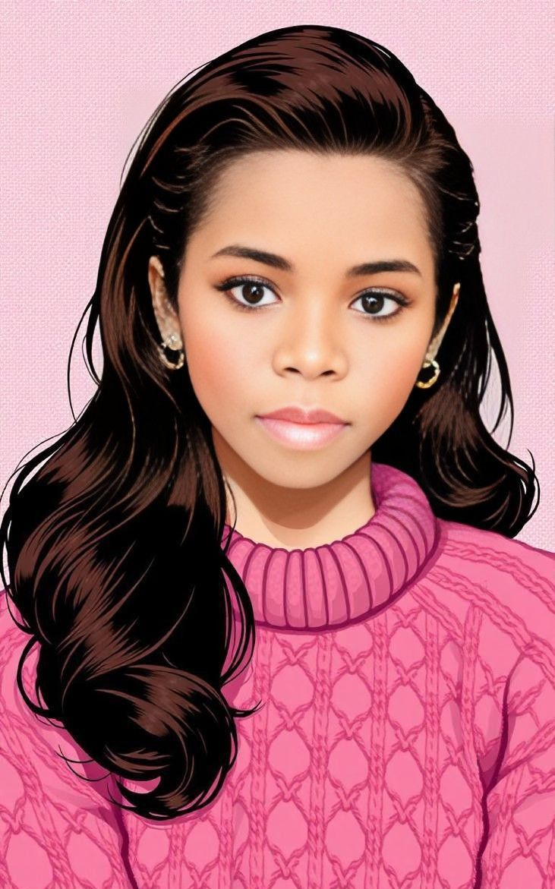
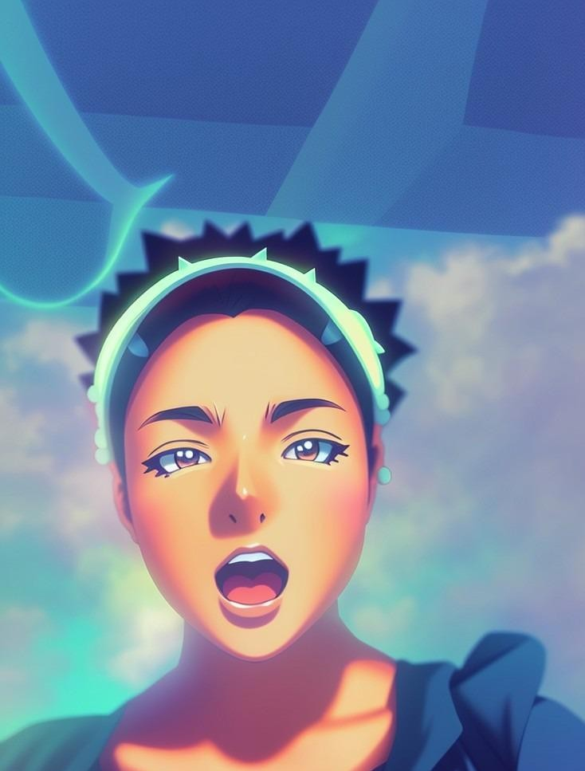
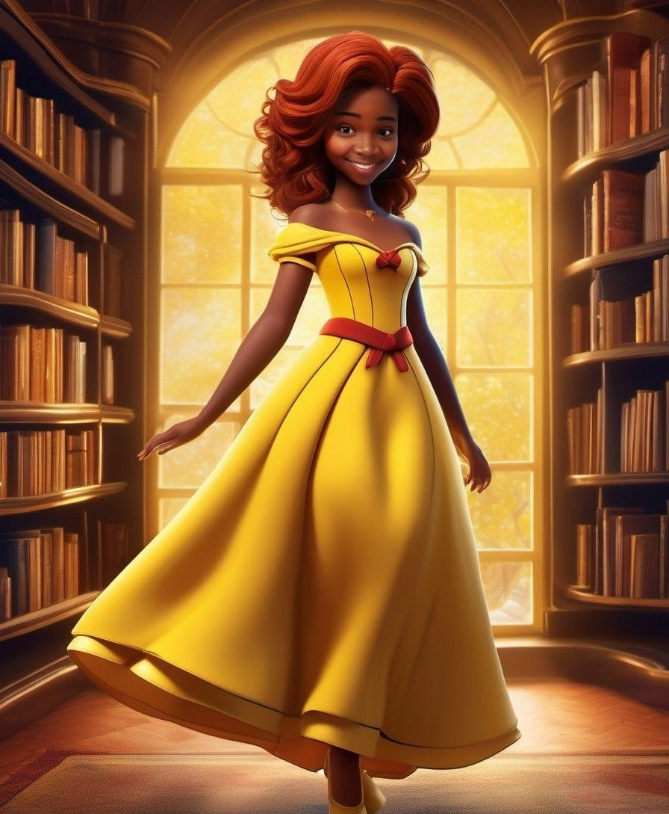
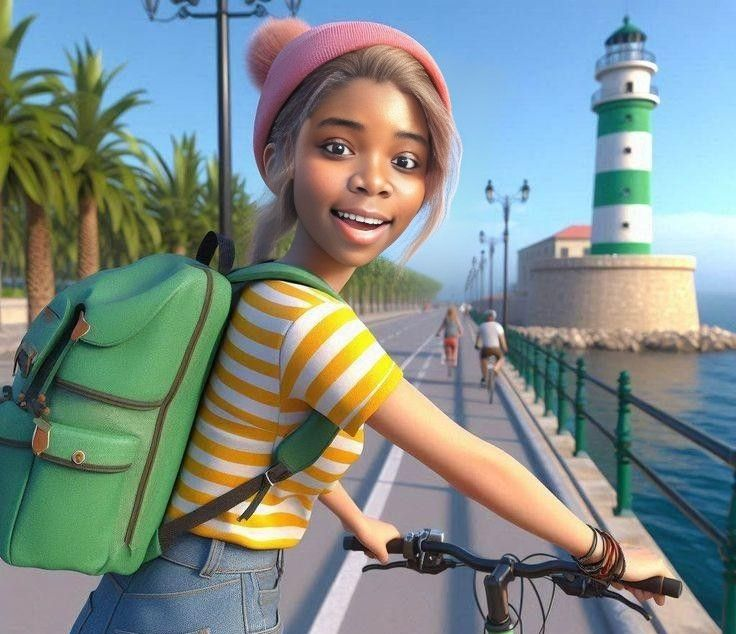
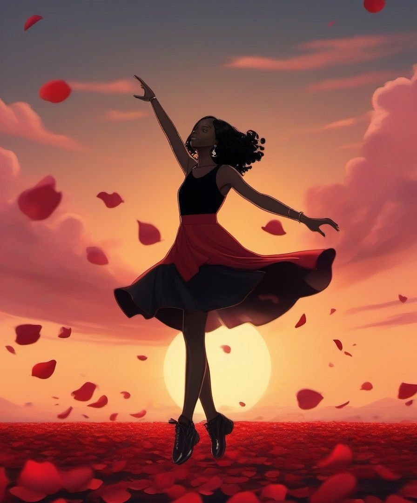

| Nom | Age | Niveau | Hobby |
|---|---|---|---|
| Auremeraude | 15 | Secondaire | Dessin |
Auremeraude est une jeune fille passionnée par le dessin et la mode, alliant créativité et élégance. Curieuse et inspirée par les tendances, elle aime donner vie à des univers visuels uniques. Son style audacieux et son sens du détail font d’elle une talentueuse passionnée, toujours à la recherche de nouveaux défis artistiques.




Ci-joint une video sur les Reines du Shopping:
Ainsi qu'un de ses sons favoris: